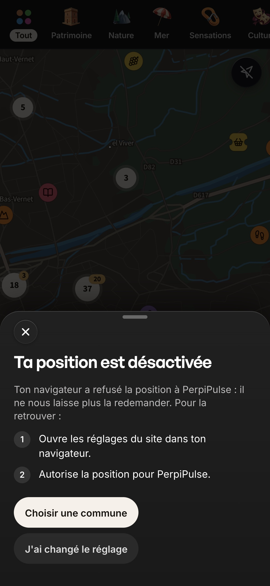
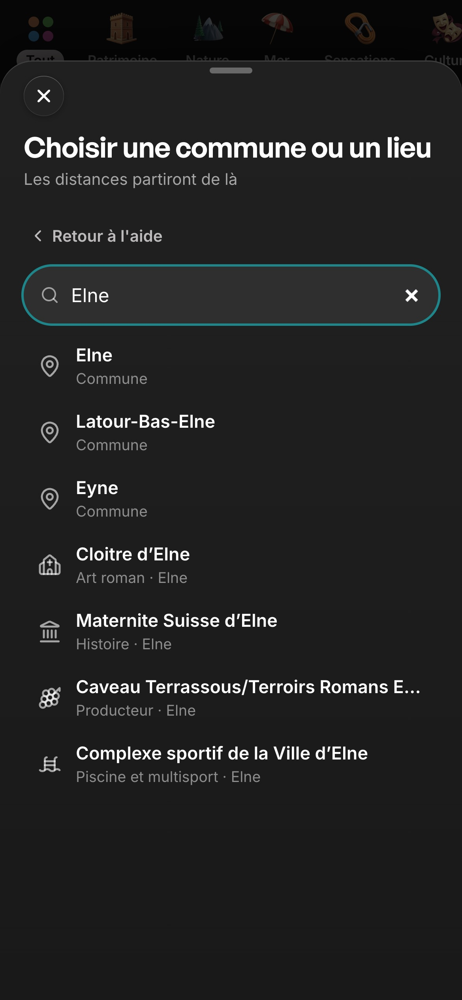
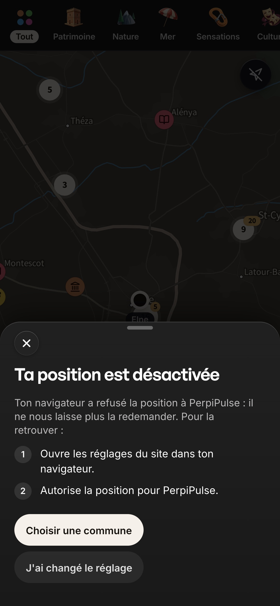
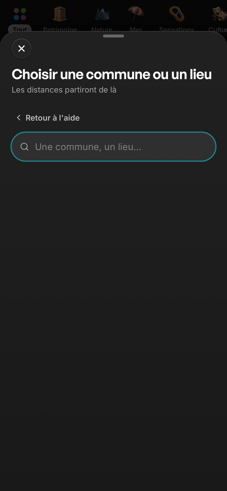
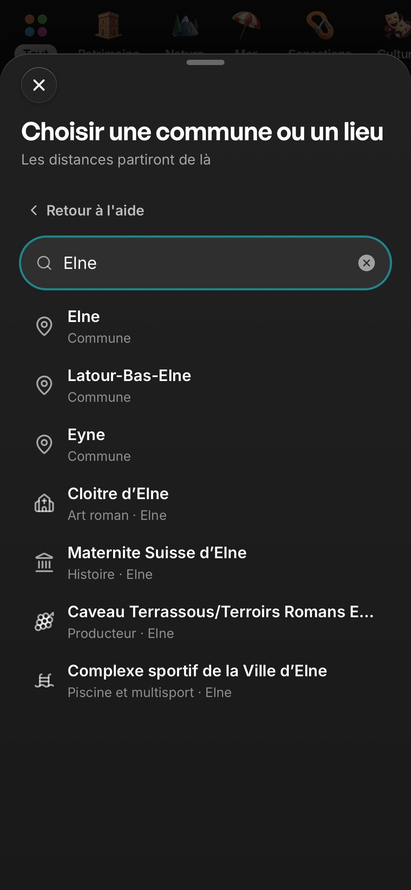

Autour de moi — flou rectifié, recherche depuis l'aide, préchauffage qui attend la carte
1ᵉʳ novembre 2026 · branche chantier/autour-de-moi-finitions · commit 92ecfb21a · décision D-1444. Rien n'est fusionné dans main ni publié en production.
- Interactif : castillet66.github.io/autour/. Instantané statique du commit
92ecfb21a, aux données réelles figées le 1ᵉʳ novembre 2026 à 02 h 01, heure de Paris : ce sont les mêmes données que l'aperçu précédent, seul le code a changé. L'écran dit « Aperçu figé ». Le chemin de l'aide s'y essaie si le navigateur refuse la position ; sans WebGL, la liste remplace la carte. - Filmé : une nouvelle vidéo MP4, le chemin de l'aide, tournée dans Chromium émulé en 390 × 844 tactile, sur le build du commit, avec un refus réel de la position par le navigateur. Les données réelles de production ont été lues au moment du tournage, vers 05 h 09. Le disque blanc qui marque chaque toucher est ajouté pour le tournage. Les sept vidéos de la livraison précédente restent valables : livraison D-1443.
- Photographié : les captures ci-dessous. Celles de Pharmacies et de Pulse Intelligence montrent des pharmacies FICTIVES (« Pharmacie d'essai A/B/C », à 12 m, 180 m et 1 450 m), servies au navigateur à la place de la vraie source, absente en local.
Ce qui a changé
- La règle du flou, rectifiée. Seules les lignes et bandes floues de raccord sont refusées : en-têtes, en-têtes de modales, fondus de bord. Les fonds flous choisis restent. Deux d'entre eux, retirés à tort le 31/10, sont rétablis : la lumière de la famille choisie dans l'Agenda, et le fond flouté de la fiche ouverte depuis la carte. La composition nette d'Autour ne change pas, et aucun nettoyage global n'a été fait.
- Recherche depuis l'aide « position désactivée ». « Choisir une commune » ouvre la recherche dans la même feuille, et le champ a le focus dans le toucher même : c'est ce qu'exige Safari iOS pour ouvrir le clavier. « Retour à l'aide » ramène aux étapes. Une commune choisie fait partir les distances de là, et l'origine est gardée.
- Le préchauffage attend la carte. Pendant qu'Autour charge sa carte, la barre basse ne télécharge plus le code de Météo et de l'Agenda. Elle le fait juste après.
Mesures du préchauffage
Téléphone ralenti (Chromium) : 390 × 844, 1,6 Mb/s, 150 ms de latence, processeur ×4, contexte neuf. Avant (db5f44c24) et après en alternance, trois essais chacun, puis trois essais sur le build final.
| Mesure | Avant | Après | Build final |
|---|---|---|---|
| Premiers résultats affichés | 6,43–6,44 s (un essai à 7,68 s) | 6,42–6,46 s | 6,39–6,47 s (un essai à 7,04 s) |
| Moteur de carte reçu | 10,40–11,94 s | 9,45–9,79 s | 8,75–9,76 s |
| Dernière tuile du fond de carte | 15,51–16,84 s | 14,81–15,28 s | 14,10–14,61 s |
| Code de Météo (32 morceaux, 72 Ko) | vers 6,4 → 8,6–9,9 s | vers 13 → 14,4–14,9 s | jusqu'à 13,8–14,3 s |
Sous WebKit, non ralenti (requestIdleCallback n'y existe pas) : le code de Météo part à 0,53–0,60 s avant, à 1,05–1,12 s après, une fois la carte au repos. Le prix : toucher Météo avant que la carte soit prête charge son code au moment du toucher. L'ouverture prend alors 741 ms sous Chromium (177 ms sous WebKit), au lieu de 148 ms (163 ms) une fois le préchauffage passé. La navigation reste interne, avec une seule requête d'index par visite.
La vidéo
- Position refusée → l'aide → la recherche dans la même feuille, focus au toucher → retour → Elne → « Distances depuis Elne » · planche légendée

Captures


L'aide « Ta position est désactivée » (refus réel, Chromium) Un toucher : la recherche dans la même feuille, champ focalisé
Un toucher : la recherche dans la même feuille, champ focalisé


« Elne » : la commune, puis les lieux Elne choisie : 63 résultats, distances depuis Elne
Elne choisie : 63 résultats, distances depuis Elne


L'aide rouverte revient sur ses étapes

WebKit (refus simulé) : champ focalisé dans le toucher

WebKit : « Elne » Agenda, famille choisie — AVANT (db5f44c24) : sans lumière
Agenda, famille choisie — AVANT (db5f44c24) : sans lumière
 Agenda, famille choisie — APRÈS : la lumière rétablie
Agenda, famille choisie — APRÈS : la lumière rétablie
 Fiche ouverte depuis la carte — AVANT : fond plein
Fiche ouverte depuis la carte — AVANT : fond plein
 Fiche ouverte depuis la carte — APRÈS : le fond flouté rétabli
Fiche ouverte depuis la carte — APRÈS : le fond flouté rétabli
 Pharmacies, données FICTIVES : « moins de 50 m », « ≈ 200 m », « ≈ 1,4 km »
Pharmacies, données FICTIVES : « moins de 50 m », « ≈ 200 m », « ≈ 1,4 km »
 Pulse Intelligence, données FICTIVES, page de contrôle : « < 50 m » sur une ligne
Pulse Intelligence, données FICTIVES, page de contrôle : « < 50 m » sur une ligne
Autres décisions du lot
- Soirées dansantes (AU-15) : 9 rendez-vous dansants en 30 jours, 11 au sens large, contre 39 fêtes, sur la couche de l'Agenda du 01/11. La moitié sont des thés dansants l'après-midi. Recommandation : ne pas ouvrir la sous-catégorie maintenant, recompter en juin–juillet. Ni sous-catégorie ni illustration n'ont été créées.
- Doublons traduits (AU-14) : les exclusions locales sont gardées, sans aucune écriture en production. Une proposition future devra garder les anciennes adresses des fiches, par une redirection qui n'existe pas encore.
Limites
- Aucun essai sur un vrai iPhone. L'ouverture du clavier n'est pas observée, seulement le focus dans le toucher sous Chromium et WebKit émulés. La porte du préchauffage n'est pas observée sur un appareil lent.
- Pharmacies et Pulse Intelligence : données fictives. Le tour complet de Pulse Intelligence passe par une étape serveur sans clé en local ; le domaine pharmacie et son rendu réels ont été montrés sur une page de contrôle temporaire, supprimée avant le commit.
- Mesures de chargement en émulation du débit et du processeur, pas sur un vrai réseau mobile.
- Sous Chromium, deux passages sur une quinzaine ont fait deux requêtes d'index à la seconde visite d'Autour, une fois avant ce lot et une fois après. La cause n'est pas établie ; c'est consigné (AU-19).